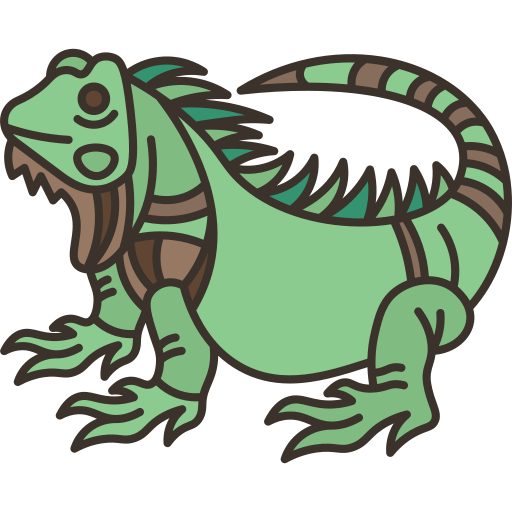
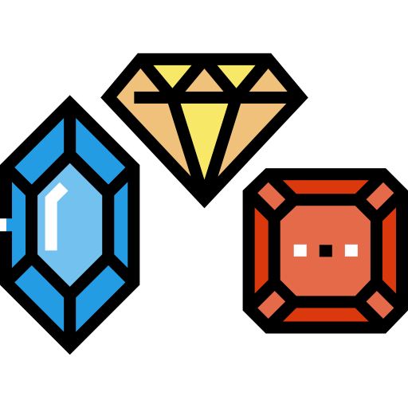
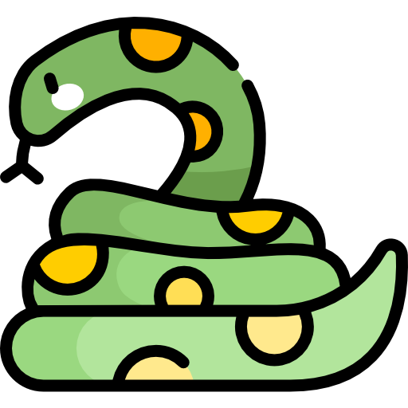

ÁRBOL
El avestruz es una especie de ave estrutioniforme de la familia Struthionidae. Es un ave grande que no vuela, sino que es corredora. Se halla en África, y en tiempos pasados también habitó en Oriente Medio.
ARAÑA
Las arañas son el orden más numeroso de la clase Arachnida, lejanamente emparentadas con otros grupos de artrópodos, como los insectos, con los que no deben confundirse. Tienen glándulas venenosas en los quelíceros, con las que paralizan a sus presas.
B

BICICLETA
Una bicicleta es un vehículo de dos ruedas propulsado por la fuerza del propio conductor. En este caso, la fuerza del conductor son las propias piernas, ya que estas son las que ponen en movimiento los pedales que están conectados a la cadena y las ruedas.

BANANA
La banana, conocido también como banano, plátano, guineo maduro, guineo, cambur o gualele, es un fruto comestible, de varios tipos de grandes plantas herbáceas del género Musa. A estas plantas de gran porte que tienen aspecto de arbolillo se las denomina plataneras, bananeros, bananeras, plátanos o bananos.
BÚHO
Las rapaces nocturnas o estrigiformes son un orden de aves compuesto por la familias Tytonidae, y la familia Strigidae que incluye búhos, mochuelos, tecolotes, autillos, cárabos, el ñacurutú y el chuncho, entre otras.
C
CEBRA
Se conocen como cebra a tres especies del género Equus propias de África —Equus quagga, Equus zebra y Equus grevyi — cuya característica más distintiva es su coloración a base de rayas blancas sobre un fondo negro.
CÓMODA
La palabra y el concepto de 'cómoda' tal como la conocemos actualmente procede del término francés 'commode'. Ésta hacia referencia tanto al clásico mueble con cajones (en el sentido original) como al que se abre por medio de unas puertas (como si se tratase de un misal o un aparador pequeño).

CELÚLA
La célula es el componente básico de todos los seres vivos. El cuerpo humano está compuesto por billones de células. Le brindan estructura al cuerpo, absorben los nutrientes de los alimentos, convierten estos nutrientes en energía y realizan funciones especializadas.
D
DADO
Un dado es un objeto preparado para mostrar un resultado aleatorio cuando es lanzado sobre una superficie horizontal, desde la mano o mediante un cubilete, en cuyo caso los resultados ocurren con una probabilidad que se distribuye mediante una distribución uniforme discreta.
DIENTE
Los dientes se componen de cuatro tejidos dentales. Tres de ellos, el esmalte, la dentina y el cemento, son los tejidos duros. El cuarto, la pulpa (el centro del diente que contiene los nervios, los vasos sanguíneos y el tejido conjuntivo), es un tejido blando o no calcificado.

DULCES
El dulce es uno de los cinco sabores básicos y de los únicos que es aceptado de manera global por todas las culturas y etnias de la tierra como uno de los sabores más placenteros.
E
ESCALERA
Una escalera es una construcción diseñada para comunicar varios espacios situados a diferentes alturas. Está conformada por escalones (peldaños) y puede disponer de varios tramos separados por descansos, mesetas o rellanos. Pueden ser fijas, transportables o móviles.

ESCORPIÓN
Scorpiones es un orden de artrópodos arácnidos depredadores conocídos comúnmente como escorpiones o alacranes. Se caracterizan por contar con un par de pinzas de agarre y una cola estrecha y segmentada, a menudo formando una reconocible curva hacia delante sobre la espalda y siempre rematada con un aguijón.

ESTRELLA
Una estrella es una esfera de gas en un estado de equilibrio entre la gravedad que tiende a comprimirla y la presión del gas, que tiende a que se expanda. Las estrellas liberan energía en su interior mediante reacciones termonucleares.
F

FLOR
La flor es el órgano de las angiospermas especializado en la reproducción sexual. Una flor típica consta de cuatro verticilos, cáliz, corola, androceo (estambres) y gineceo (pistilo). éstos se insertan en el receptáculo, que se encuentra en el extremo del pedicelo que une la flor a la rama.
FRESA
Fragaria, llamado comúnmente fresa o frutilla, es un género de plantas rastreras estoloníferas de la familia Rosaceae. Agrupa unos 400 taxones descritos, de los cuales solo unos 20 están aceptados. Son cultivadas por su fruto comestible llamado de la misma manera, fresa o frutilla.

FLAMA
El término llama tiene varios usos. Así puede hacer alusión a una masa gaseosa que se encuentra en combustión. En este caso, podemos establecer que deriva del latín. Exactamente de la palabra “flamma”.
G
GALLETA
La galleta es una preparación culinaria de pequeño tamaño, dulce o salada, horneada y hecha normalmente a base de harina de trigo, huevos, azúcar, mantequilla o aceites vegetales o grasas animales.

GATO
El gato doméstico, llamado más comúnmente gato, y de forma coloquial minino, michino, michi, micho, mizo, miz, morroño o morrongo, y algunos nombres más, es un mamífero carnívoro de la familia Felidae. Es una subespecie domesticada por la convivencia con el ser humano.

GUITARRA
La guitarra es un instrumento musical de la familia de los cordófonos, es decir los instrumentos que producen su sonido al hacer vibrar las cuerdas.
H
HORMIGA
Las hormigas son una familia de insectos eusociales que, como las avispas y las abejas, pertenecen al orden de los himenópteros.

HUELGA
La huelga es una protesta en la que sus miembros se abstienen de realizar la actividad que realizan normalmente en perjuicio de aquellos a los que dirigen sus reclamos o sus quejas.

HELADO
En su forma má,s simple, el helado o crema helada es un alimento congelado que por lo general se hace de productos lácteos tales como leche o crema. El helado es un sistema en el que coexisten diversos subsistemas en total armonía. Generalmente se endulza con azúcar, edulcorantes o miel.
I

IGUANA
La iguana es un reptil de la familia Iguanidae que se encuentra en América Latina y el Caribe. Habita sobre todo en bosques húmedos, donde prefiere vivir en los árboles, ya que es una excelente trepadora. Es un animal ovíparo, es decir, se reproduce por medio de huevos.
ISLA
Una isla es una porción de tierras naturalmente emergidas completamente rodeadas por agua. Tienen un área menor que un continente y mayor que un islote; y son más estables que un pequeño banco de arena. Un conjunto de islas geológicas o geográficamente relacionadas se llaman archipiélagos.
INVIERNO
El invierno es una de las cuatro estaciones de las zonas templadas. Sigue al otoño y precede a la primavera. Esta estación se caracteriza por días más cortos, noches más largas y temperaturas más bajas a medida que nos alejamos de la l6iacute;nea ecuatorial. En algunos países de la zona intertropical se utiliza el término de estación lluviosa para denominar a una época de mayor precipitación y pluviosidad, aunque a veces se emplea el vocablo «verano» para referirse a la estación seca, e «invierno» para la estación lluviosa.
J
JAULA
Una jaula es una caja o espacio cerrado con paredes hechas de enrejados metálicos, de madera, mimbre, alambre u otro material resistente, que se utiliza para mantener animales cautivos, desde fieras salvajes a pájaros. La forma y tamaño depende del animal al que se quiera encerrar y, en los tipos domésticos de cautividad, suelen tener en su interior recipientes para la comida y bebedero para el agua.

JIRAFA
La jirafa es una especie de mamífero artiodáctilo, de la familia Giraffidae propio de África. Es la más alta de todas las especies de animales terrestres existentes, ya que puede alcanzar una altura de 5,8 m y un peso que varía entre 750 y 1600 kg.

JOYAS
Una joya o alhaja es un objeto ornamental usado para adornar o embellecer el cuerpo. Generalmente una joya se fabrica con piedras y metales preciosos, aunque también se pueden emplear otros materiales para fabricar joyas, como por ejemplo papel de revistas endurecido o joyas de plástico recuperado del océano, entre otras innovaciones en bisutería.
K

KIWI
El kiwi es la baya de la enredadera Actinidia deliciosa. Es originaria de una gran área de China, sobre todo de los bosques del valle del río Yangtsé. Introducida en Nueva Zelanda en 1904, fue cultivada desde entonces en muchas regiones templadas por su fruto comestible.

KARATE
El karate o kárate es un arte marcial tradicional basada en algunos estilos de las artes marciales chinas, y en menor medida en otras disciplinas provenientes del sureste asiático proveniente de Okinawa. El nombre japonés se compone de las palabras 空 y 手. A la persona que lo practica se la llama karateca.
KOALA
El koala es una especie de marsupial diprotodonto de la familia Phascolarctidae, endémico de Australia. Es el único representante existente de la familia Phascolarctidae y sus parientes vivos más cercanos son los wombats.
L

LIBRO
Un libro es una obra compuesta por un conjunto de hojas de papel o de otro material, encuadernadas y protegidas con una tapa o cubierta, que forman un volumen. La palabra, como tal, proviene del latín liber, libri.
LOBO
El lobo es una especie de mamífero placentario del orden de los carnívoros. El perro doméstico se consideraba miembro de la misma especie según distintos indicios, la secuencia del ADN y otros estudios genéticos.

LÁMPARA
Una lámpara o bombilla es un convertidor de energía, cuya función principal es transformar la energía eléctrica en luz. Actualmente en el mercado existe una gran variedad de lámparas, con diferentes características y funcionamientos.
M
MAMUT
Mammuthus es un género extinto de mamíferos proboscídeos de la familia Elephantidae conocidos comúnmente como mamuts. Existieron desde hace aproximadamente 4,8 millones de años hasta hace apenas 3700 años, en las épocas Plioceno, Pleistoceno y Holoceno.
MANZANA
La manzana es el fruto comestible de la especie Malus domestica, el manzano com´n. Es una fruta pomácea de forma redonda y sabor muy dulce, dependiendo de la variedad. Los manzanos se cultivan en todo el mundo y son las especies más utilizadas del género Malus.
MANO
En los seres humanos, la mano es un órgano par que forma parte de cada una de las dos extremidades del cuerpo humano, y es el cuarto segmento del miembro superior o torácico. Se localiza en el extremo de cada uno de los antebrazos, es prensil y tiene cinco dedos. Abarca desde la muñeca hasta la yema de los dedos.
N
NUEZ
En botánica, el término nuez se aplica a un fruto seco indehiscente, monospermo y con un pericarpio duro que deriva de un ovario ínfero cuya pared está endurecida. Se encuentran nueces en géneros botánicos del orden de las Fagales, por ejemplo: Avellanas, Bellotas, Castañas.
NADADOR
La natación es consistentemente una de las principales actividades recreativas públicas, y en algunos países las lecciones de natación son una parte obligatoria del currículo educativo. Como un deporte formal, la natación tiene competencias locales, nacionales e internacionales.
NARANJA
La naranja es una fruta cítrica obtenida del naranjo dulce, del naranjo amargo y de naranjos de otras variedades o híbridos, de origen asiático.
O
OIDO
La audición está constituida por los procesos psicofisiológicos que proporcionan al ser humano la capacidad de oír. El conducto auditivo externo o meato auditivo externo es una cavidad del oído externo cuya función es conducir el sonido desde el pabellón auricular hasta el tímpano.

ORDENADO
Un ordenador es un Sistema conformado por programas y elementos electrónicos, que en su conjunto permiten procesar y ordenar información. Los programas se les conocen como Software y a los elementos electrónicos como Hardware.

OSO
Los osos o úrsidos son una familia de mamíferos omnívoros. Son animales de gran tamaño, generalmente omnívoros ya que, a pesar de su temible dentadura, comen frutos, raíces e insectos, además de carne.
P

PAN
El pan, del latín panis, es un alimento básico que forma parte de la dieta tradicional en Europa, Medio Oriente, India, América y Oceanía. Se suele preparar mediante el horneado de una masa, elaborada fundamentalmente con harina de cereal, agua y sal.

PANDEMIA
Una pandemia es una epidemia de una enfermedad infecciosa que se ha propagado en un área geográficamente extensa, por ejemplo, en varios continentes o en todo el mundo, afectando a un número considerable de personas.

PAYASO
Payaso es una noción que deriva de la lengua italiana y que puede emplearse como sustantivo o adjetivo. En el primer caso, un payaso es un tipo de artista que busca divertir al público con ciertas rutinas humorísticas y a través de su maquillaje y vestuario de características poco habituales.
Q
QUESO
El queso es un alimento sólido que se obtiene por maduración de la cuajada de la leche animal una vez eliminado el suero; sus diferentes variedades dependen del origen de la leche empleada, de los métodos de elaboración seguidos y del grado de madurez alcanzada.

QUIRÓFANO
El quirófano es aquella sala que se halla en sanatorios, hospitales o centros de atención médica y que está especialmente acondicionada para la práctica de operaciones quirúrgicas a aquellos pacientes que así lo demanden.

QUÍMICA
La química es la ciencia natural que estudia la composición, estructura y propiedades de la materia ya sea en forma de elementos, compuestos, mezclas u otras especies, así como los cambios que esta experimenta durante las reacciones y su relación con la energía química.
R
RANA
Los anuros son un grupo de anfibios, con rango taxonómico de orden, conocidos coloquialmente como ranas y sapos. Los adultos se caracterizan por carecer de cola, por presentar un cuerpo corto y muy ensanchado, y unas patas posteriores muy desarrolladas y adaptadas para el salto.

RALLADOR
Un rallador es un utensilio de cocina empleado para desmenuzar alimentos sólidos mediante restregamiento, tales como frutas, verduras, pan duro, etc. El rallador suele ser una pieza de acero con un conjunto de perforaciones sobre su superficie que recuerda a una lima. En el mercado existen pocos modelos de plástico.

RATA
Rattus es un género de roedores miomorfos de la familia Muridae, conocidos comúnmente como ratas. Son roedores de mediano tamaño. Poseen patas anteriores cortas y con cuatro dedos y patas posteriores, más largas, con cinco dedos. El género alberga entre 56 y 65 especies.
S

SIRENA
Las sirenas son criaturas marinas mitológicas pertenecientes a las leyendas y al folclore. Originalmente, en la Antigüedad clásica, se las representaba como seres híbridos con rostro o torso de mujer y cuerpo de ave.

SANDÍA
Citrullus lanatus, comúnmente llamada sandía, acendría, sindria, patilla, es una especie de la familia Cucurbitaceae. Es originaria de África con una gran presencia y difusión en todo el mundo.

SERPIENTE
Las serpientes u ofidios son un suborden de saurópsidos diápsidos pertenecientes al orden Squamata, del superorden Lepidosauria, caracterizado por la ausencia de patas y el cuerpo muy alargado. Se originaron en el período Cretácico.
T

TIBURÓN
Los selaquimorfos o selacimorfos son un superorden de condrictios conocidos comúnmente con el nombre de tiburones o escualos. Algunos grandes escualos, como el tiburón blanco y el toro, son conocidos a veces con el nombre de jaquetones.

TIJERA
Una tijera, denominada frecuentemente en su plural tijeras, es una herramienta manual que es utilizada para cortar diferentes tipos de materiales.

TACO
El taco es una preparación culinaria muy popular de México que consiste en una tortilla, generalmente de ma´z, que se dobla o se enrolla para contener dentro diversos ingredientes y algún tipo de salsa.
U
UNICORNIO
El unicornio es una criatura mitológica del folclore europeo representada habitualmente como un caballo blanco con patas de antílope, ojos y pelo de cabra y un cuerno en la frente. En las representaciones modernas, sin embargo, es idéntico a un caballo, sólo diferenciándose en la existencia del cuerno.

UVA
La uva es la común denominación que reciben los frutos formados en los racimos de la vid. Es usada mundialmente para su fermentación, ya que ésta da lugar al vino. Sembradas en viñas, crecen agrupadas en las parras de las vides entre seis y trescientas uvas por racimo.

UNIVERSO
El Universo es todo lo que podemos tocar, sentir, percibir, medir o detectar. Abarca los cosas vivas, los planetas, las estrellas, las galaxias, las nubes de polvo, la luz e incluso el tiempo. Antes de que naciera el Universo, no existían el tiempo, el espacio ni la materia.
V
VACUNA
La vacuna es un preparado que se basa en microorganismos (muertos, debilitados o vivos) como bacterias, hongos, parásitos y, en forma mas limitada, virus o rickettsias; que se administra a una persona para prevenir, atenuar o tratar las enfermedades infecciosas.

VACA
La vaca, en el caso de la hembra, o toro, en el caso del macho, es un mamífero artiodáctilo de la familia de los bóvidos. Anteriormente era considerado una subespecie de Bos primigenius, pero un estudio reciente lo considera una especie distinta.
VOLCÁN
Un volcán es una estructura geológica por la que emerge el magma que se divide en lava y gases provenientes del interior de la Tierra.
W
WASABI
El wasabi es una especia o condimento picante de la cocina japonesa, que se usa a menudo en sushi y otros platos con pescado.
WOKI TOKI
Los radios de dos vías, walkie-talkies o más comúnmente conocidos como “radios” son dispositivos que envían voz a través de una radiofrecuencia que se transmite a través de una antena.

WATERPOLO
El waterpolo en los Juegos Olímpicos se disputa desde París 1900 en la rama masculina y desde Sídney 2000 en la rama femenina. En Melbourne 1956 se produjo el incidente del baño sangriento, en el que el soviético Valentin Prokopov.
X
XILÓFONO
El xilófono es un instrumento musical de percusión. Cada lámina se afina según un tono específico de la escala cromática. Como se puede afinar, se trata de un laminófono de sonido determinado. El orden de las láminas es similar al orden del teclado de piano.
XIMENA
Ximena Sariñana Rivera es una actriz y cantante mexicana, ganadora en la categoría de Artista Revelación en los Premios MTV. Fue nominada a los Premios Grammy y Premios Grammy Latinos por su álbum Mediocre.
XIOMI
Aunque muchas veces nos referimos a Xiaomi como fabricante de smartphones chino, hay que decir que se trata de una empresa que se dedica al diseño, desarrollo y venta de teléfonos inteligentes, aplicaciones y otro tipo de productos electrónicos.
Y

YEGUA
Una yegua es una yegua adulta u otro equino. En la mayoría de los casos, una yegua es una hembra de más de tres años y una potra es una hembra de tres años o menos. En las carreras de caballos pura sangre, una yegua se define como una hembra de más de cuatro años.
YATE
Un yate es todo buque o embarcación de recreo. Se define embarcación de recreo como toda aquella de cualquier tipo, con independencia de su medio de propulsión, cuyo casco tenga una eslora comprendida entre 2,5 y hasta 24 metros.
YOGA
El yoga es una práctica que conecta el cuerpo, la respiración y la mente. Esta práctica utiliza posturas físicas, ejercicios de respiración y meditación para mejorar la salud general. El yoga se desarrolló como una práctica espiritual hace miles de años.
Z
ZAPATO
La palabra zapato parece venir del árabe en euskera hay una palabra muy similar (zapa) que significa pisar, pero parece que es una onomatopeya y no está relacionada con la palabra árabe. De zapato nos llega también: Zapatazo - Golpe dado con el zapato.

ZORRO
Los vulpinos son una tribu de mamíferos carnívoros incluidos en la familia de los cánidos. Se conocen comúnmente como zorros o raposas.
ZANAHORIA
Daucus carota subespecie sativus, llamada popularmente zanahoria, es la forma domesticada de la zanahoria silvestre, también denominadas apiáceas, y considerada la más importante y de mayor consumo dentro de esta familia.